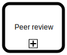

Basic modeling exercises#
These exercises should familiarize you with the basic BPMN elements and flows, and using BPMN.io based BPMN modeling tools, like Miranum Modeler included in the playground.
Sequence flow#
Start with a simple flow with multiple
 tasks in sequence from
tasks in sequence from  start to
start to  end.
end.Toggle Token Simulation to observe how each token flows through the process one task at a time.
While on the simulator, hover on a task to toggle pause on a task.
Observe how the token stops and tasks wait for you to release it with the play button on a task.

Exclusive paths#
Model a flow that splits and joins with exclusive gateways (plain diamond symbol on the palette).
Find out how to make a flow path default through its context toolbar.
Toggle Simulation to observe how tokens choose their path on splits and joins.
While on the simulator, use switch button on the gateways to change the path.
See also, how the
start event and the end event are vertically aligned with the happy path of the process. This usually makes the process easier to understand.
{kind=link}
Concurrent paths#
Re-use the model from the previous exercise.
One at a time, choose the exclusive gateways on your diagram and use their context modeling palettes to turn them into parallel gateways.
Toggle Simulation to observe how tokens multiply on splits and merge back in joins.
While on the simulator, toggle pause on tasks to observe how joining gateways wait for all incoming paths before letting the merged token continue.
Turn the first parallel gateway back to exclusive gateway and simulate. What happens at the joining gateways? Why?
Revert the last step, and turn one of the latter parallel gateways back to exclusive gateway and simulate. What happens now? Why?
{kind=link}
concurrent-paths-locked.bpmn
concurrent-paths-doubled.bpmn
concurrent-paths-mixed.bpmn
Multiple end-events#
Re-use the model from the previous exercise.
Replace some of the joining parallel gateways with additional
end events.Toggle Simulation to observe how the process completes only when all parallelized tokens have reached at least some of the end events.
While on the simulator, toggle pause on tasks to observe even more easily how completion of the process is delayed, even when some tokens reach end events on their paths.
{kind=link}
Embedded sub-process#
Re-use the model from the previous exercise.
Wrap some of the
tasks with an embedded subprocess by looking up Sub-process (expanded) from modeling palette.Toggle Simulation to ensure that your process is still integrated (all tokens reach end events and process completes).
All this should just refactor your model with an abstraction useful for the next practice. Tasks or their execution order should not change.
{kind=link}
Note
Embedded sub-processes could later be exported into separate processes, and called as external sub-processes using  call activity.
{kind=link}
Boundary event#
Re-use the model from the previous exercise.
Allow the tasks within the embedded sub-process to be cancelled with a timeout using interrupting timer boundary event.
Add path from the boundary event to a new joining to properly merge tokens before the
end event.Toggle Simulation and toggle pause for a task within the sub-process to let you manually simulate the timer event and confirm that the process is completed properly also when triggering the timeout.
Investigate what happens if you had used
 non-interrupting timer boundary event instead?
non-interrupting timer boundary event instead?
{kind=link}
More boundary events#
Re-use the model from the previous exercise.
Add at least two more boundary events into the model with necessary paths and other elements. Make at least one of these to be a
non-interrupting timer boundary event.Toggle Simulation to ensure your model’s integrity. Make sure to try out your new boundary events.
{kind=link}
Note
The example solution introduces the terminate end event, which terminates all remaining tokens in the containing process tree.